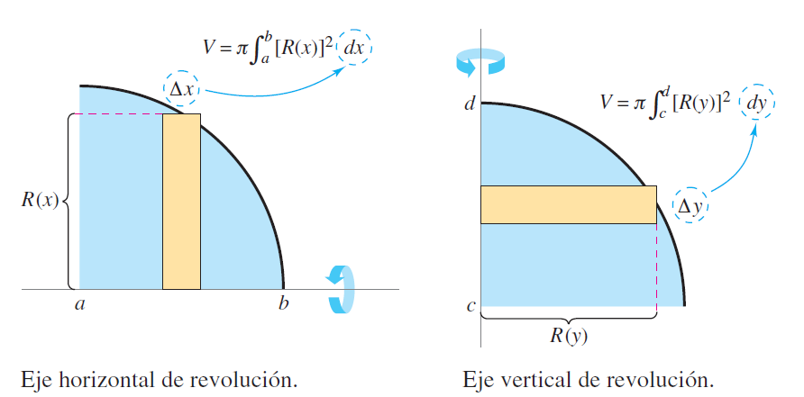
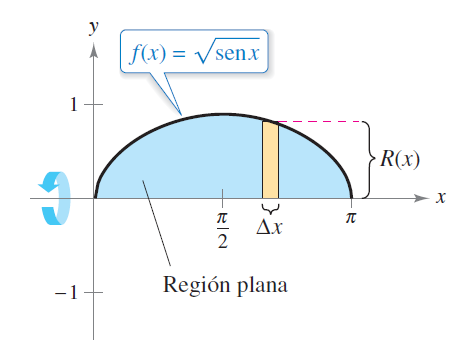
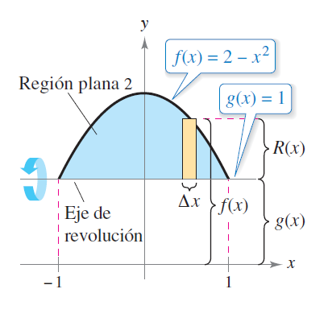

Volumen de un Sólido de Revolución
Volumen de un Sólido de Revolución
El cálculo del volumen de un sólido de revolución es una aplicación importante de la integración definida. Este tipo de problemas surge cuando una región del plano es rotada alrededor de un eje, generando un cuerpo tridimensional.
Fundamento Matemático
Para encontrar el volumen de un sólido de revolución con el método de los discos, utilice una de las siguientes fórmulas.
Eje horizontal de revolución
\[ V = \pi \int_a^b [R(x)]^2 \, dx \]
Eje vertical de revolución
\[ V = \pi \int_c^d [R(y)]^2 \, dy \]

Este método se conoce como el método de discos.
Ejemplo: Volumen generado por \(f(x) = \sqrt{x}\), entre \(x = 0\) y \(x = 4\)
Rotamos la curva alrededor del eje x. Entonces:
\[ V = \pi \int_0^4 (\sqrt{x})^2 \, dx = \pi \int_0^4 x \, dx = \pi \left[\frac{x^2}{2}\right]_0^4 = \pi \cdot \frac{16}{2} = 8\pi \]
✅ El volumen del sólido es \(\boxed{8\pi}\) unidades cúbicas.
Gráfica del sólido
A continuación, se presenta un visor interactivo de GeoGebra con el sólido generado por rotación de la función \(f(x) = \sqrt{x}\) en el intervalo de 0 a 4:
Construcción paso a paso en GeoGebra 3D
A continuación, se describe cómo construir este sólido de revolución utilizando GeoGebra 3D:
Paso 1: Definir la función
Abre GeoGebra 3D en https://www.geogebra.org/3d y escribe en la barra de entrada:
f(x) = sqrt(x)
Esto grafica la curva base.
Paso 2: Establecer el dominio
Define el intervalo de interés escribiendo:
a = 0
b = 4
Esto permite delimitar el tramo que será rotado.
Paso 3: Generar el sólido de revolución
Utiliza el comando:
Superficie(f, 360°, EjeX)
Este comando crea el sólido tridimensional que se obtiene al girar la curva alrededor del eje x.
Paso 4: Calcular el volumen
Para calcular el volumen generado por rotación, escribe:
V = π * Integral(f(x)^2, a, b)
Si GeoGebra no da el valor directamente, puedes dividir el cálculo en dos partes:
- Primero define: A = Integral(f(x)^2, a, b)
- Luego calcula: V = π * A
Esto debe dar como resultado:
\[ A = 8 \quad \Rightarrow \quad V = 8\pi \approx 25.1327 \]
Este valor coincide con el obtenido por el método analítico.
Resuelve los siguientes problemas aplicando el método de los discos o de la arandela, según corresponda. Establece la integral que da el volumen del sólido de revolución, y calcula el volumen cuando sea posible.
Ejemplos 1-2: Método de los discos
- Encuentre el volumen del sólido formado al girar la región acotada por la gráfi ca de
\[f(x) = \sqrt{\sin{x}} \] y el eje \(x\) \((0<x<\pi)\) en el eje \(x\).

- Encuentre el volumen del sólido formado al girar la región acotada por la gráfica de
\[f(x) =2 - x^2 \] y \(g(x) = 1\) respecto a la recta \(y = 1\), como se muestra en la figura.

Ejercicios 1–6: Rotación alrededor del eje x
Encuentra el volumen del sólido generado al girar la región acotada por la gráfica de \(f(x) = \sin(x)\) y el eje x, en el intervalo \([0, \pi]\), alrededor del eje x.
Calcula el volumen generado al girar la región acotada por \(f(x) = 2 - x^2\) y el eje x, entre \(x = -1\) y \(x = 1\), alrededor del eje x.
Halla el volumen del sólido generado por la rotación de la región entre \(f(x) = \sqrt{x}\) y el eje x, en el intervalo \([0, 4]\), respecto al eje x.
Determina el volumen del sólido formado al girar la región limitada por \(y = x^2\) y \(y = 0\), desde \(x = 0\) hasta \(x = 2\), alrededor del eje x.
Encuentra el volumen del sólido generado al girar la región entre \(y = \cos(x)\) y el eje x, en \([0, \pi/2]\), alrededor del eje x.
Halla el volumen generado por la rotación de la región entre \(f(x) = e^{-x^2}\) y el eje x, en el intervalo \([0, 1]\), alrededor del eje x.
Ejercicios 7–9: Rotación alrededor del eje y
Encuentra el volumen del sólido generado al girar la región entre \(x = y^2\) y \(x = 0\), de \(y = 0\) a \(y = 2\), respecto al eje y.
Calcula el volumen del sólido generado al girar la región entre \(x = \sqrt{y}\) y \(x = 0\), desde \(y = 0\) hasta \(y = 4\), alrededor del eje y.
Determina el volumen del sólido generado al girar la región acotada por \(x = 4 - y^2\) y \(x = 0\), en \(y \in [-2, 2]\), respecto al eje y.
Ejercicios 10–12: Regiones entre dos curvas (método de la arandela)
Calcula el volumen del sólido generado al girar la región entre \(y = \sqrt{x}\) y \(y = x\) en el intervalo \([0, 1]\), alrededor del eje x.
Encuentra el volumen del sólido generado al girar la región acotada por \(y = x^2\) y \(y = 2x\), desde \(x = 0\) hasta \(x = 2\), alrededor del eje x.
Halla el volumen del sólido formado al girar la región comprendida entre \(y = \ln(x)\) y \(y = 0\), desde \(x = 1\) hasta \(x = e\), alrededor del eje x.
📚 Recursos para la clase invertida
Para reforzar tu comprensión de los métodos para calcular volúmenes de sólidos de revolución, te recomendamos explorar los siguientes recursos interactivos y audiovisuales:
📘 Guía didáctica
- Aplicación de las integrales – Clase invertida
Incluye teoría, fórmulas, ejercicios, y enlaces a videos explicativos.
Descargar PDF
🎥 Videos sobre uso de GeoGebra
GeoGebra: Método de Discos (básico + sólido de revolución)
Explicación paso a paso para graficar y calcular volumen: 👉 https://www.youtube.com/watch?v=qjcSfPKNvNoConstrucción de volumen por revolución en GeoGebra
Cómo usar superficies y comandos de integración en el entorno 3D: 👉 https://www.youtube.com/watch?v=qvbpChooWh0
Estos videos te permitirán visualizar la rotación de regiones y comprender mejor los métodos de cálculo de volúmenes usando tecnología dinámica. …